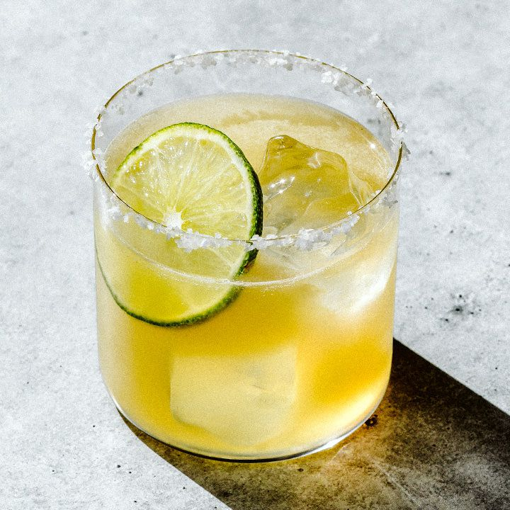

Margarita Recipe

The Classic Restaurant Drink
While it's considered a Mexico creation, it is very popular in North America. The classic margarita has
the tastes of lime with with a mix of liquor.
Common iterations of this drink include tequila, lime juice and sweet syrup. It can also come in other flavors,
such as watermelon, strawberry and mango. For this recipe, we will stick to the classic margarita.
Ingredients
- Tequila: 2 ounces
- Orange Liqueur: 1/2 ounce
- Lime Juice: 1 ounce, freshly squeezed
- Agave Syrup: 1/2 ounce
- Garnish: lime wheel
- Garnish: kosher salt (I prefer sugar) around the rim of the glass
Steps
- Add tequila, orange liqueur, lime juice and syrup to a cocktail shaker filled with ice. Shake well.
- Rub the rim of the glass in salt (or sugar).
- Strain into a glass over fresh ice.
- Garnish with lime wheel.
- Enjoy a classic!